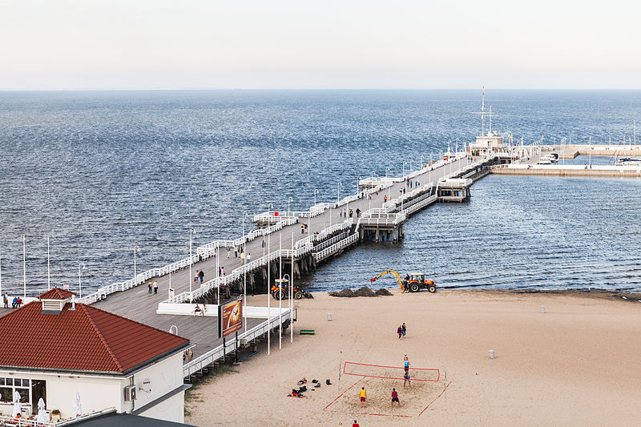
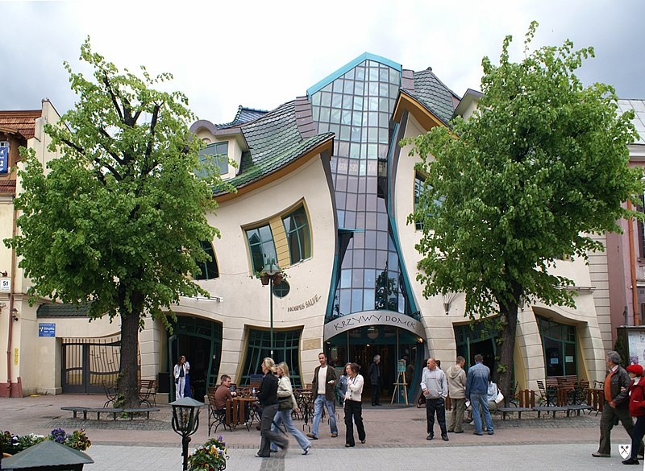
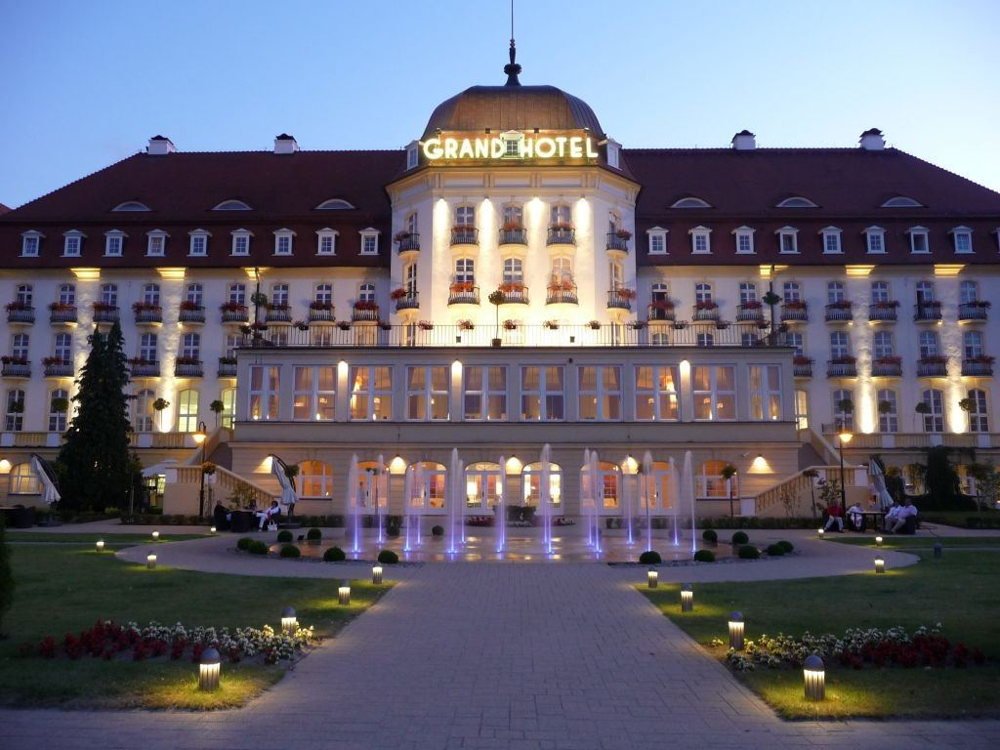
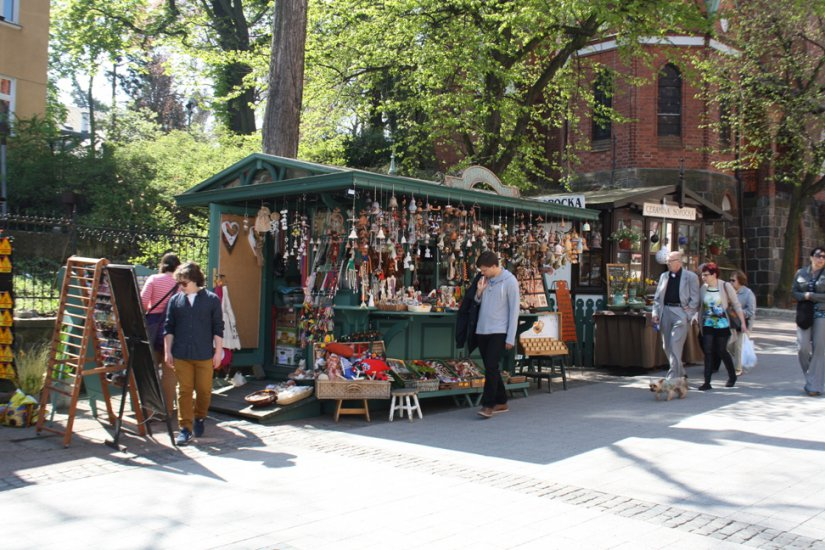

Zobacz najciekawsze miejsca w Sopocie
Molo w Sopocie
Najdłuższe molo nad Morzem Bałtyckim. Ma około pół kilometra długości – część spacerowa ma 511,5 m, z czego 458 m wchodzi w głąb Zatoki Gdańskiej. Jest jedną z największych atrakcji miasta. W głowicy mola jest zlokalizowana przystań morska „Molo” w Sopocie.
Krzywy Domek
został zbudowany w Sopocie przy ul. Bohaterów Monte Cassino 53 według projektu architektów Szotyńskich i Zaleskiego, którego inspiracją były rysunki Jana Marcina Szancera i Pera Dahlberga. Obiekt stanowi część Centrum Handlowego „Rezydent”. Na parterze mieszczą się pomieszczenia handlowe, lokal gastronomiczny, bary, sushi, kawiarnia Costa, salon urody i modelowania sylwetki Body Shape Garden oraz salon gier. Budynek jest też siedzibą m.in. oddziału regionalnego Radia RMF FM oraz RMF Maxxx.
Grand Hotel
Otwarty w 1927 hotel kosztował fortunę- 20 mln gdańskich guldenów i w założeniu miał być miejscem odpoczynku dla gości odwiedzających sopockie kasyno. To tu nocowały takie nazwiska jak Marlena Dietrich, Jan Kiepura, Greta Garbo czy Fidel Castro i z tej wspaniałej historii Grand Hotel nadal jest dumny. Dziś to luksusowy obiekt łączący oczekiwania współczesnego gościa z nawiązaniami do prawie stuletniej historii. Prywatna plaża, siłownia z widokiem na morze, spa, a może wyrafinowana kuchnia? Jeśli chcecie poczuć odrobinę luksusu, szykujcie minimum 700 złotych za noc.
"Monciak" - Bulwar im. Bohaterów Monte Cassino
Mówi się, że wizyta w Sopocie nie liczy się bez zobaczenia molo, lecz też trudno ją uznać za "kompletną" bez spaceru po słynnym deptaku w centrum miasta, który jest nazywany Monciakiem. Mowa o ulicy Bohaterów Monte Cassino, która prowadzi prosto na molo i ma ponad 600 m długości. Po drodze mijamy piękne kamienice, a także sławny "Krzywy Domek", który jednych zachwyca, a dla innych jest symbolem kiczu. Monciak słynie ponadto również z licznych klubów, do których zjeżdżają imprezowicze z całej Polski. Latem trudno tędy przejść, ponieważ na ulicę wylewa się morze wczasowiczów. Chcąc uniknąć tłumów, warto zatem wybrać się tam poza sezonem.